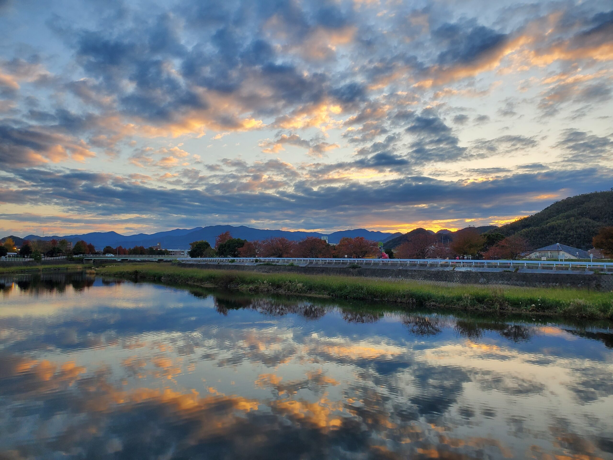
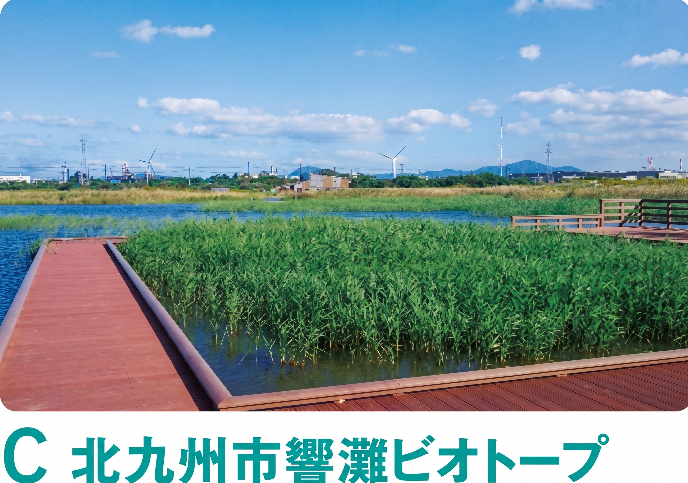

合馬竹林公園
日本一のたけのこ産地に広がる、150種以上の竹・笹が集う竹の博物館。

工業都市として発展してきた北九州市には、市街地からすぐの場所に手つかずの自然が数多く残っています。カルスト台地の平尾台、渡り鳥が集う曽根干潟、廃棄物処分場跡地から再生した響灘ビオトープ——これらは特別な旅行先ではなく、日常の延長で出会える自然です。
アーバンネイチャー北九州は、こうした自然スポットや活動拠点、そこに関わる人々のネットワークを紹介し、都市と自然が近接するまちならではの豊かさを伝えていきます。
日本一のたけのこ産地に広がる、150種以上の竹・笹が集う竹の博物館。

若松北海岸に広がる白砂青松の景観と、希少な海浜植物。

羊の群れのような石灰岩が点在する、九州最大のカルスト台地。
